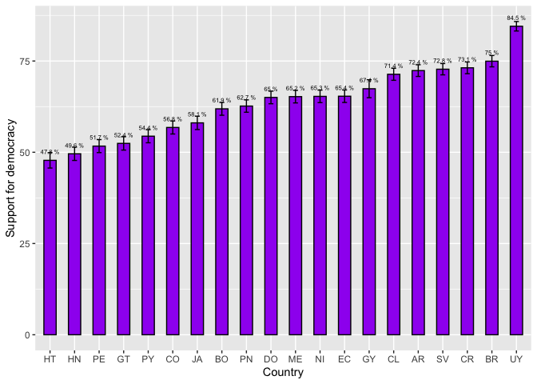
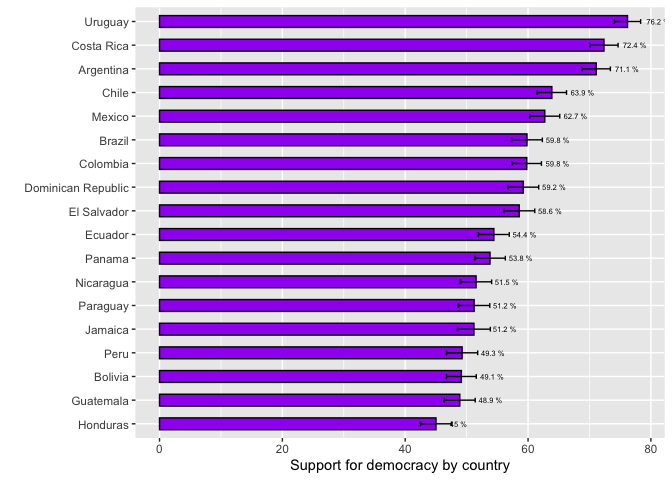
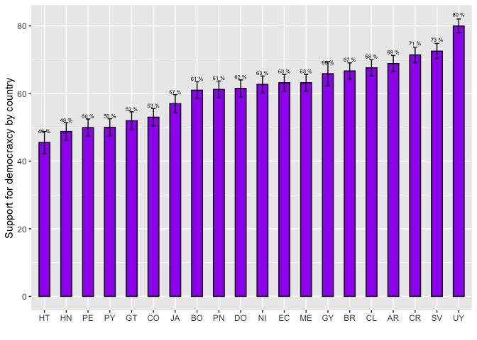
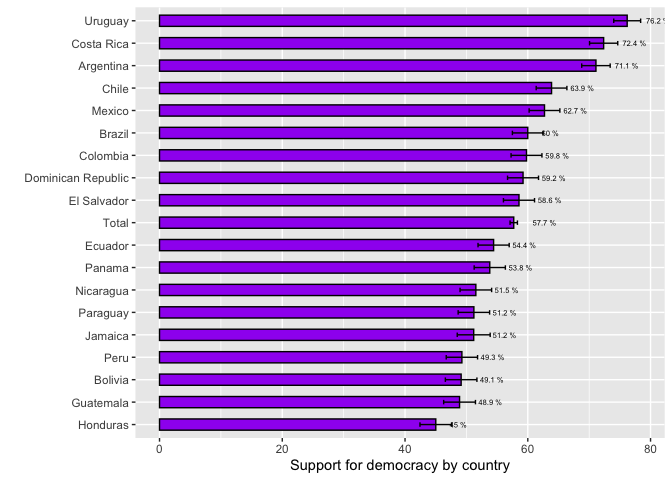

Comparison of more than 2 means with the AmericasBarometer
Introduction
In this section we will see how to construct confidence intervals of the mean using the data from the AmericasBarometer for more than two groups. For that, we will continue to use the last regional report “The Pulse of Democracy” for 2021 round, available here, and for the 2018/19 round, available here, where the main findings of the AmericasBarometer are presented. In both reports, one of the sections reports the results on support for electoral democracy by country. This type of plot is one of the most used with the AmericasBarometer data because it uses data for one wave to its limits, presenting a panoramic view of the region for a critical variable like support for democracy in all the countries in Latin America
About the dataset
The data we are going to use should be cited as follows: Source: AmericasBarometer by the Latin American Public Opinion Project (LAPOP), wwww.LapopSurveys.org. We can download the data freely here.
This section loads a trimmed database, originally in SPSS (.sav)
format. This database is hosted in the “materials_edu” repository of the
LAPOP account on GitHub. Using the library rio and the
command import, you can import this database from this
repository. In addition, the data from countries with codes less than or
equal to 35 are selected, that is, the observations of the United States
and Canada are eliminated.
library(rio)
lapop18 = import("https://raw.github.com/lapop-central/materials_edu/main/LAPOP_AB_Merge_2018_v1.0.sav")
lapop18 = subset(lapop18, pais<=35)We also load the dataset for the 2021 round.
lapop21 = import("https://raw.github.com/lapop-central/materials_edu/main/lapop21.RData")
lapop21 = subset(lapop21, pais<=35)Support for democracy by country 2021
Figure 1.1 shows the percentage of citizens that supports democracy in each country. Each country bar includes the 95% confidence interval. The question in which is based this figure is: ING4. Changing the subject again, democracy may have problems, but it is better than any other form of government. To what extent do you agree or disagree with this statement? Respondents can answer in a 1-7 scale, where 1 means “Strongly disagree” and 7 “Strongly agree”.
To calculate these percentages, we hace to recode all answers between 5 and 7 as those who support democracy.

First, we have to define a new variable with this recodification that identifies supporters.
library(car)
lapop21$ing4r = car::recode(lapop21$ing4, "1:4=0; 5:7=100")
table(lapop21$ing4r)##
## 0 100
## 20523 36240To replicate Figure 1.1, we have to define a variable that identifies
countries as a variable of type factor. For this, we calculate a new
variable “paises” as factor with the command as.factor and
we label it the the initials of each country, with the command
levels, in the same way as it is shown in Figure 1.1.
lapop21$paises = as.factor(lapop21$pais)
levels(lapop21$paises) = c("ME", "GT", "SV", "HN", "NI",
"CR", "PN", "CO", "EC", "BO", "PE",
"PY", "CL", "UY", "BR", "AR", "DO",
"HT", "JA", "GY")
table(lapop21$paises)##
## ME GT SV HN NI CR PN CO EC BO PE PY CL UY BR AR
## 2998 3000 3245 2999 2997 2977 3183 3003 3005 3002 3038 3004 2954 3009 3016 3011
## DO HT JA GY
## 3000 3088 3121 3011Once done, we can use the library Rmisc` and the command
summarySE`to calculate the means (that is, the percentages)
of support for democracy in each country. This command also includes the
standard deviation, the standard error and the confidence interval. We
save this table in an object “df”.
library(Rmisc)
df = summarySE(data=lapop21, measurevar="ing4r", groupvar="paises", na.rm=T)
dfWith this table “df” we can replicate Figure 1.1 using the library
ggplot in the same way as previous sections show.
library(ggplot2)
fig1.1 <- ggplot(df, aes(x=reorder(paises, ing4r), y=ing4r))+
geom_bar(width=0.5, fill="purple", colour="black", stat="identity")+
geom_errorbar(aes(ymin=ing4r-ci, ymax=ing4r+ci), width=0.2)+
geom_text(aes(label=paste(round(ing4r, 1), "%")), vjust=-1.5, size=2)+
xlab("Country")+
ylab("Support for democracy")
fig1.1
These results are not the same as those presented in Figure 1.1 because they do not include survey weights.
Support for democracy by country 2018/19
Figure 1.2 of the 2018/19 report shows the average support for electoral democracy for each of the 18 countries analyzed. It also presents the confidence intervals for each country, in the form of a gray bar, which indicates the lower and upper range of this interval, with a dot indicating the mean value.

To reproduce the data in this graph, you first have to recode the variable, in the same way as was done in the section about confidence intervals.
library(car)
lapop18$ing4r = car::recode(lapop18$ing4, "1:4=0; 5:7=100")
table(lapop18$ing4r)##
## 0 100
## 11463 15623When the database is imported, the variables are defined as numerical, and many of them are factors, such as the variable “pais”. In order to evaluate support for democracy by country, a new variable “paises” is defined as a factor and labeled.
lapop18$paises = as.factor(lapop18$pais)
levels(lapop18$paises) = c("Mexico", "Guatemala", "El Salvador", "Honduras", "Nicaragua",
"Costa Rica", "Panama", "Colombia", "Ecuador", "Bolivia", "Peru",
"Paraguay", "Chile", "Uruguay", "Brazil", "Argentina",
"Dominican Republic", "Jamaica")
table(lapop18$paises)##
## Mexico Guatemala El Salvador Honduras
## 1580 1596 1511 1560
## Nicaragua Costa Rica Panama Colombia
## 1547 1501 1559 1663
## Ecuador Bolivia Peru Paraguay
## 1533 1682 1521 1515
## Chile Uruguay Brazil Argentina
## 1638 1581 1498 1528
## Dominican Republic Jamaica
## 1516 1513With these variables, we create a new dataframe with the data on the
average support for democracy for each country (which is the percentage
of citizens that support democracy), with the data to build the
confidence intervals. For this we use the command summarySE
which is part of the library Rmisc. These data are saved in
the dataframe “df2”.
library(Rmisc)
df2 = summarySE(data=lapop18, measurevar="ing4r", groupvar="paises", na.rm=T)
df2With this new dataframe, a graph similar to Figure 1.2 of the report is constructed. It must be taken into account that some percentages are not similar to those shown in the report because this code does not include survey weights.
For the plot construction we use the library ggplot2.
The command ggplot first requires you to specify the
dataframe you are working with, which in this case is “df”. Next, the
“aesthetics” of the graph are defined with the aes
specification, indicating what information to include on each axis. By
default the bars are vertical, so the “paises” variable is defined on
the X axis, but the reorder specification is used to
indicate that the bars do not follow the alphabetical order of the
“countries” variable but rather are ordered by the values of the
variable “ing4r”. In the Y axis, the variable “ing4r” is defined, which
will mark the height of the bar.
Once the axes are defined, the command geom_bar is used
to indicate that we want to create a bar chart. Within this command we
specify the width, the internal color, the border color and, above all,
that the data from the dataframe “df2” is used as it appears, with the
specification stat="identity".
In addition to the bar, we add goem_errorbar to include
the error bars that mark the limits of the confidence intervals. This
layer also requires an aes aesthetic where the lower
(ymin=ing4r-ci) and upper bounds are defined
(ymax=ing4r+ci).
The specification geom_text is used to add the data
labels to each bar. This specification requires an aes
aesthetic where it is defined that the “ing4r” data will be used, but
rounded to 1 decimal place and with the “%” symbol. We adjust the
position of the label with hjust and the size of the label
with size.
Finally, it is indicated that the X axis does not have a label and
that the Y axis is named “Support for democracy according to countries.
The coord_flip() specification is used to rotate the graph
90 degrees and present the horizontal bars.
library(ggplot2)
fig1.2 <- ggplot(df2, aes(x=reorder(paises, ing4r), y=ing4r))+
geom_bar(width=0.5, fill="purple", colour="black", stat="identity")+
geom_errorbar(aes(ymin=ing4r-ci, ymax=ing4r+ci), width=0.2)+
geom_text(aes(label=paste(round(ing4r, 1), "%")), hjust=-0.8, size=2)+
xlab("")+
ylab("Support for democracy by country")+
coord_flip()
fig1.2
This type of graph is widely used in the AmericasBarometer reports and others produced by LAPOP. This graph shows the average value of support for democracy in each country and a bar with 95% confidence intervals. In this way, a visual comparison can be made between countries to see where there might be statistically significant differences. When the confidence intervals of two countries overlap, we may say that there is a difference in the population average of support for democracy. On the other hand, if the confidence intervals do not overlap, we may say that there is a population difference in the average support for democracy among the countries.
If, for example, the average support for democracy is compared between Uruguay (76.2%) and Costa Rica (72.4%), the countries at the top of the ranking, we may say that the population averages of both countries are not different, since the confidence intervals overlap. On the contrary, if Argentina (71.1%) and Chile (63.9) are compared, we may say that the population average of support for democracy in Argentina is greater than the equivalent in Chile, since both confidence intervals do not overlap.
However, this visual comparison is for reference, because to find out if there are statistically significant differences among countries (or between a couple of countries), a statistical test must be carried out. In the section on comparison of 2 means, a t-test was used to compare two groups. This same test could be used to compare whether the differences in the sample means between two countries can be extrapolated, but it does not help if one wanted to have a general comparison between this entire group of countries, or it would be very cumbersome to have to make multiple comparisons for each country pair.
In order to have that general picture and, in turn, be able to evaluate the pairings, another statistical test can be used.
ANOVA test
The ANOVA test is used to compare the mean of a numerical variable between groups of a variable type factor. In this case, we use the ANOVA test with a dummy variable, coded as 0-1, so that the mean equals the proportion.
This test is based on the F distribution and proposes the following null hypothesis for the comparison of a numerical variable X between n groups of the factor variable.
\[ H0: \mu_{x1} = \mu_{x2} = \mu_{x1} =...= \mu_{xn} \]
The alternative hypothesis it proposes is that at least one population mean of a group is different.
Evaluating means using ANOVA
The command aov performs analysis of variance with a
numeric variable and a variable of type factor with more than 2 groups.
This test is saved in an object called “anova” and the results are then
described with the command summary.
For example, for the comparisons among countries in the 2021 report.
anova1 = aov(lapop21$ing4r~ lapop21$paises)
summary(anova1)## Df Sum Sq Mean Sq F value Pr(>F)
## lapop21$paises 19 5043583 265452 119.6 <2e-16 ***
## Residuals 56743 125984290 2220
## ---
## Signif. codes: 0 '***' 0.001 '**' 0.01 '*' 0.05 '.' 0.1 ' ' 1
## 3898 observations deleted due to missingnessThe value of the F test statistic is 119.6, with a corresponding very small p-value. Since this value of the p-value is less than 0.05, the null hypothesis can be rejected and we can affirm that at least one population mean is different. The ANOVA test does not tell us which means are different.
To find out which means are different, we have to evaluate the
different pairings to find out the differences in each pair. This detail
can be calculated with a post-hoc test called Tukey’s Test. In R this
test can be run with the command TukeyHSD.
In this case there are many pairings because there are many countries. In each pairing there is the value of the difference of the variable “ing4r” between the 2 countries, as well as the lower and upper limit of this difference. The adjusted p-value (“p adj”) must be evaluated to know if the difference in support for democracy between these two countries is statistically significant and can be extrapolated to the population.
For example, Figure 1,1 shows that confidence intervals of support for democracy for Uruguay and El Salvador do not overlap, so we may say there is a statistically significant differenfce. Tukey`s test indicates that the p-value for this pairing is lower than 0.05, so we can confidently affirm that there is a difference in the population.
Figure 1.1 also shows that the confidence intervals for El Salvador and Costa Rica overlap, so we cannot say if there is a difference. Tukey`s test shows that this pairing reports a p-value closer to 1, higher than 0.05, so we cannot conclude that there is a statistically significant difference between these two countries.
TukeyHSD(anova1)## Tukey multiple comparisons of means
## 95% family-wise confidence level
##
## Fit: aov(formula = lapop21$ing4r ~ lapop21$paises)
##
## $`lapop21$paises`
## diff lwr upr p adj
## GT-ME -12.81110639 -17.21014734 -8.412065438 0.0000000
## SV-ME 7.51472777 3.23440052 11.795055007 0.0000001
## HN-ME -15.65991103 -20.03954846 -11.280273609 0.0000000
## NI-ME 0.06891815 -4.28488763 4.422723926 1.0000000
## CR-ME 7.89327831 3.52874562 12.257811001 0.0000000
## PN-ME -2.58426407 -6.87771869 1.709190547 0.8399056
## CO-ME -8.45440523 -12.80894488 -4.099865590 0.0000000
## EC-ME 0.11207218 -4.23408021 4.458224564 1.0000000
## BO-ME -3.34744169 -7.70603319 1.011149820 0.4118048
## PE-ME -13.55648653 -17.88620050 -9.226772555 0.0000000
## PY-ME -10.84138024 -15.20442232 -6.478338170 0.0000000
## CL-ME 6.12046554 1.74691370 10.494017378 0.0001281
## UY-ME 19.28089777 14.93583101 23.625964536 0.0000000
## BR-ME 9.71404137 5.37186027 14.056222482 0.0000000
## AR-ME 7.13269126 2.78906902 11.476313499 0.0000011
## DO-ME -0.22184272 -4.58899259 4.145307157 1.0000000
## HT-ME -17.45444100 -22.19729333 -12.711588678 0.0000000
## JA-ME -7.19113997 -11.60694748 -2.775332452 0.0000015
## GY-ME 2.16117887 -3.26565130 7.588009046 0.9977259
## SV-GT 20.32583415 16.00919456 24.642473747 0.0000000
## HN-GT -2.84880465 -7.26393772 1.566328428 0.7442009
## NI-GT 12.88002453 8.49051421 17.269534855 0.0000000
## CR-GT 20.70438470 16.30423450 25.104534888 0.0000000
## PN-GT 10.22684232 5.89718544 14.556499191 0.0000000
## CO-GT 4.35670115 -0.03353706 8.746939370 0.0545886
## EC-GT 12.92317856 8.54125927 17.305097854 0.0000000
## BO-GT 9.46366470 5.06940754 13.857921863 0.0000000
## PE-GT -0.74538014 -5.11099570 3.620235415 1.0000000
## PY-GT 1.96972614 -2.42894550 6.368397787 0.9904296
## CL-GT 18.93157192 14.52247544 23.340668407 0.0000000
## UY-GT 32.09200416 27.71116163 36.472846690 0.0000000
## BR-GT 22.52514776 18.14716731 26.903128216 0.0000000
## AR-GT 19.94379765 15.56438784 24.323207453 0.0000000
## DO-GT 12.58926367 8.18651747 16.992009871 0.0000000
## HT-GT -4.64333462 -9.41898371 0.132314478 0.0683755
## JA-GT 5.61996642 1.16895169 10.070981147 0.0013071
## GY-GT 14.97228526 9.51676862 20.427801901 0.0000000
## HN-SV -23.17463880 -27.47150278 -18.877774816 0.0000000
## NI-SV -7.44580962 -11.71634131 -3.175277933 0.0000001
## CR-SV 0.37855054 -3.90291670 4.660017785 1.0000000
## PN-SV -10.09899184 -14.30797849 -5.890005180 0.0000000
## CO-SV -15.96913300 -20.24041286 -11.697853141 0.0000000
## EC-SV -7.40265559 -11.66538437 -3.139926804 0.0000001
## BO-SV -10.86216945 -15.13758008 -6.586758824 0.0000000
## PE-SV -21.07121429 -25.31718170 -16.825246888 0.0000000
## PY-SV -18.35610801 -22.63605570 -14.076160316 0.0000000
## CL-SV -1.39426223 -5.68492323 2.896398772 0.9998649
## UY-SV 11.76617001 7.50454810 16.027791917 0.0000000
## BR-SV 2.19931361 -2.05936610 6.457993321 0.9564240
## AR-SV -0.38203651 -4.64218560 3.878112585 1.0000000
## DO-SV -7.73657048 -12.02070565 -3.452435315 0.0000000
## HT-SV -24.96916877 -29.63569471 -20.302642835 0.0000000
## JA-SV -14.70586773 -19.03959270 -10.372142762 0.0000000
## GY-SV -5.35354889 -10.71380092 0.006703139 0.0507278
## NI-HN 15.72882918 11.35876470 20.098893661 0.0000000
## CR-HN 23.55318934 19.17243776 27.933940925 0.0000000
## PN-HN 13.07564696 8.76570597 17.385587955 0.0000000
## CO-HN 7.20550580 2.83471019 11.576301415 0.0000010
## EC-HN 15.77198321 11.40954360 20.134422823 0.0000000
## BO-HN 12.31246935 7.93763693 16.687301769 0.0000000
## PE-HN 2.10342451 -2.24263830 6.449487309 0.9773844
## PY-HN 4.81853079 0.43926431 9.197797274 0.0142698
## CL-HN 21.78037657 17.39063916 26.170113978 0.0000000
## UY-HN 34.94080881 30.57945077 39.302166850 0.0000000
## BR-HN 25.37395241 21.01546923 29.732435581 0.0000000
## AR-HN 22.79260229 18.43268338 27.152521210 0.0000000
## DO-HN 15.43806832 11.05470924 19.821427396 0.0000000
## HT-HN -1.79452997 -6.55231170 2.963251759 0.9988893
## JA-HN 8.46877107 4.03693231 12.900609828 0.0000000
## GY-HN 17.82108991 12.38120714 23.260972675 0.0000000
## CR-NI 7.82436016 3.46943362 12.179286707 0.0000000
## PN-NI -2.65318222 -6.93687130 1.630506864 0.8040200
## CO-NI -8.52332338 -12.86823478 -4.178411978 0.0000000
## EC-NI 0.04315403 -4.29335149 4.379659554 1.0000000
## BO-NI -3.41635983 -7.76533207 0.932612403 0.3668110
## PE-NI -13.62540467 -17.94543508 -9.305374272 0.0000000
## PY-NI -10.91029839 -15.26373103 -6.556865753 0.0000000
## CL-NI 6.05154739 1.68758184 10.415512937 0.0001607
## UY-NI 19.21197963 14.87656214 23.547397111 0.0000000
## BR-NI 9.64512323 5.31259782 13.977648630 0.0000000
## AR-NI 7.06377311 2.72980337 11.397742858 0.0000014
## DO-NI -0.29076086 -4.64831036 4.066788632 1.0000000
## HT-NI -17.52335915 -22.25737307 -12.789345233 0.0000000
## JA-NI -7.26005811 -11.66637127 -2.853744961 0.0000010
## GY-NI 2.09226073 -3.32684670 7.511368155 0.9984831
## PN-CR -10.47754238 -14.77213351 -6.182951246 0.0000000
## CO-CR -16.34768354 -20.70334376 -11.992023322 0.0000000
## EC-CR -7.78120613 -12.12848126 -3.433931006 0.0000000
## BO-CR -11.24071999 -15.60043103 -6.881008953 0.0000000
## PE-CR -21.44976484 -25.78060581 -17.118923863 0.0000000
## PY-CR -18.73465855 -23.09881902 -14.370498085 0.0000000
## CL-CR -1.77281277 -6.14748032 2.601854776 0.9971565
## UY-CR 11.38761947 7.04142968 15.733809247 0.0000000
## BR-CR 1.82076307 -2.52254181 6.164067938 0.9956520
## AR-CR -0.76058705 -5.10533268 3.584158583 1.0000000
## DO-CR -8.11512103 -12.48338824 -3.746853810 0.0000000
## HT-CR -25.34771931 -30.09160049 -20.603838135 0.0000000
## JA-CR -15.08441828 -19.50133082 -10.667505728 0.0000000
## GY-CR -5.73209943 -11.15982881 -0.304370060 0.0253704
## CO-PN -5.87014116 -10.15457612 -1.585706207 0.0002154
## EC-PN 2.69633625 -1.57957394 6.972246438 0.7789850
## BO-PN -0.76317761 -5.05173067 3.525375439 1.0000000
## PE-PN -10.97222246 -15.23142314 -6.713021773 0.0000000
## PY-PN -8.25711617 -12.55019240 -3.964039942 0.0000000
## CL-PN 8.70472961 4.40097275 13.008486465 0.0000000
## UY-PN 21.86516184 17.59035512 26.139968572 0.0000000
## BR-PN 12.29830544 8.02643183 16.570179056 0.0000000
## AR-PN 9.71695533 5.44361688 13.990293784 0.0000000
## DO-PN 2.36242135 -1.93482956 6.659672266 0.9225956
## HT-PN -14.87017693 -19.54874675 -10.191607113 0.0000000
## JA-PN -4.60687590 -8.95356698 -0.260184811 0.0241854
## GY-PN 4.74544295 -0.62529752 10.116183406 0.1675043
## EC-CO 8.56647741 4.22923510 12.903719726 0.0000000
## BO-CO 5.10696355 0.75725663 9.456670463 0.0050722
## PE-CO -5.10208129 -9.42285130 -0.781311291 0.0045949
## PY-CO -2.38697501 -6.74114157 1.967191555 0.9244792
## CL-CO 14.57487077 10.21017307 18.939568474 0.0000000
## UY-CO 27.73530301 23.39914855 32.071457468 0.0000000
## BR-CO 18.16844661 13.83518374 22.501709478 0.0000000
## AR-CO 15.58709649 11.25238953 19.921803461 0.0000000
## DO-CO 8.23256252 3.87427978 12.590845246 0.0000000
## HT-CO -9.00003577 -13.73472462 -4.265346919 0.0000000
## JA-CO 1.26326527 -3.14377301 5.670303540 0.9999800
## GY-CO 10.61558411 5.19588706 16.035281152 0.0000000
## BO-EC -3.45951386 -7.80082418 0.881796458 0.3390271
## PE-EC -13.66855871 -17.98087577 -9.356241639 0.0000000
## PY-EC -10.95345242 -15.29923101 -6.607673834 0.0000000
## CL-EC 6.00839336 1.65206335 10.364723362 0.0001835
## UY-EC 19.16882560 14.84109402 23.496557169 0.0000000
## BR-EC 9.60196920 5.27713485 13.926803547 0.0000000
## AR-EC 7.02061908 2.69433782 11.346900343 0.0000017
## DO-EC -0.33391490 -4.68381759 4.015987795 1.0000000
## HT-EC -17.56651318 -22.29348934 -12.839537026 0.0000000
## JA-EC -7.30321214 -11.70196326 -2.904461027 0.0000008
## GY-EC 2.04910670 -3.36385378 7.462067172 0.9988335
## PE-BO -10.20904484 -14.53389835 -5.884191339 0.0000000
## PY-BO -7.49393856 -11.85215733 -3.135719785 0.0000002
## CL-BO 9.46790722 5.09916708 13.836647366 0.0000000
## UY-BO 22.62833946 18.28811597 26.968562945 0.0000000
## BR-BO 13.06148306 8.72414845 17.398817668 0.0000000
## AR-BO 10.48013294 6.14135559 14.818910295 0.0000000
## DO-BO 3.12559897 -1.23673215 7.487930083 0.5529493
## HT-BO -14.10699932 -18.84541497 -9.368583664 0.0000000
## JA-BO -3.84369828 -8.25474019 0.567343629 0.1869365
## GY-BO 5.50862056 0.08566745 10.931573671 0.0415494
## PY-PE 2.71510629 -1.61423247 7.044445040 0.7868317
## CL-PE 19.67695206 15.33702192 24.016882205 0.0000000
## UY-PE 32.83738430 28.52616138 37.148607225 0.0000000
## BR-PE 23.27052790 18.96221330 27.578842502 0.0000000
## AR-PE 20.68917779 16.37941073 24.998944844 0.0000000
## DO-PE 13.33464381 9.00116531 17.668122314 0.0000000
## HT-PE -3.89795448 -8.60982100 0.813912044 0.2702314
## JA-PE 6.36534656 1.98283656 10.747856564 0.0000485
## GY-PE 15.71766540 10.31789470 21.117436104 0.0000000
## CL-PY 16.96184578 12.58866540 21.335026163 0.0000000
## UY-PY 30.12227802 25.77758515 34.466970886 0.0000000
## BR-PY 20.55542162 16.21361465 24.897228583 0.0000000
## AR-PY 17.97407150 13.63082328 22.317319724 0.0000000
## DO-PY 10.61953752 6.25275965 14.986315397 0.0000000
## HT-PY -6.61306076 -11.35557056 -1.870550968 0.0001401
## JA-PY 3.65024028 -0.76519934 8.065679887 0.2714271
## GY-PY 13.00255912 7.57602830 18.429089931 0.0000000
## UY-CL 13.16043224 8.80518532 17.515679154 0.0000000
## BR-CL 3.59357584 -0.75879217 7.945943849 0.2736383
## AR-CL 1.01222572 -3.34158005 5.366031495 0.9999993
## DO-CL -6.34230825 -10.71958693 -1.965029583 0.0000518
## HT-CL -23.57490654 -28.32708696 -18.822726123 0.0000000
## JA-CL -13.31160550 -17.73743046 -8.885780547 0.0000000
## GY-CL -3.95928666 -9.39427114 1.475697814 0.5194288
## BR-UY -9.56685640 -13.89059977 -5.243113026 0.0000000
## AR-UY -12.14820651 -16.47339716 -7.823015865 0.0000000
## DO-UY -19.50274049 -23.85155850 -15.153922489 0.0000000
## HT-UY -36.73533878 -41.46131679 -32.009360765 0.0000000
## JA-UY -26.47203774 -30.86971622 -22.074359262 0.0000000
## GY-UY -17.11971890 -22.53180775 -11.707630051 0.0000000
## AR-BR -2.58135011 -6.90364184 1.740941611 0.8488682
## DO-BR -9.93588409 -14.28181893 -5.589949253 0.0000000
## HT-BR -27.16848238 -31.89180746 -22.445157301 0.0000000
## JA-BR -16.90518134 -21.30000871 -12.510353972 0.0000000
## GY-BR -7.55286250 -12.96263489 -2.143090109 0.0001358
## DO-AR -7.35453398 -11.70190870 -3.007159250 0.0000004
## HT-AR -24.58713226 -29.31178222 -19.862482311 0.0000000
## JA-AR -14.32383123 -18.72008247 -9.927579983 0.0000000
## GY-AR -4.97151238 -10.38244158 0.439416806 0.1197505
## HT-DO -17.23259829 -21.97888747 -12.486309100 0.0000000
## JA-DO -6.96929725 -11.38879596 -2.549798538 0.0000043
## GY-DO 2.38302159 -3.04681253 7.812855712 0.9924358
## JA-HT 10.26330104 5.47220315 15.054398930 0.0000000
## GY-HT 19.61561988 13.87926662 25.351973139 0.0000000
## GY-JA 9.35231884 3.88327354 14.821364146 0.0000003In the same way, we can compare countries in the 2018/19 round.
anova2 = aov(lapop18$ing4r~ lapop18$paises)
summary(anova2)## Df Sum Sq Mean Sq F value Pr(>F)
## lapop18$paises 17 2020430 118849 50.19 <2e-16 ***
## Residuals 27068 64097287 2368
## ---
## Signif. codes: 0 '***' 0.001 '**' 0.01 '*' 0.05 '.' 0.1 ' ' 1
## 956 observations deleted due to missingnessThe value of the F test statistic is 50.19, with a corresponding very small p-value. Since this value of the p-value is less than 0.05, the null hypothesis can be rejected and we can affirm that at least one population mean is different. The ANOVA test does not tell us which means are different.
In this case, we had visually found that the confidence intervals for support for democracy between Uruguay and Costa Rica overlap, so there were probably no significant differences. Tukey’s test indicates that the p-value of this pairing (0.785) is greater than 0.05, so we cannot say that there are population differences in support for democracy between these two countries.
We had also seen that the confidence intervals of support for democracy between Argentina and Chile did not overlap, so we may say that there was a significant difference. Tukey’s test shows a p-value of 0.0053, less than 0.05, so we can affirm that there is a statistically significant difference in support for democracy between these two countries at 95% confidence.
TukeyHSD(anova2)## Tukey multiple comparisons of means
## 95% family-wise confidence level
##
## Fit: aov(formula = lapop18$ing4r ~ lapop18$paises)
##
## $`lapop18$paises`
## diff lwr upr p adj
## Guatemala-Mexico -13.83855232 -19.99973268 -7.6773720 0.0000000
## El Salvador-Mexico -4.15651385 -10.37919495 2.0661672 0.6610391
## Honduras-Mexico -17.71301987 -23.90598442 -11.5200553 0.0000000
## Nicaragua-Mexico -11.18563360 -17.37547195 -4.9957953 0.0000000
## Costa Rica-Mexico 9.63632968 3.40606390 15.8665955 0.0000102
## Panama-Mexico -8.91695094 -15.06513692 -2.7687650 0.0000619
## Colombia-Mexico -2.93307293 -9.00353098 3.1373851 0.9695508
## Ecuador-Mexico -8.29184982 -14.46519846 -2.1185012 0.0003980
## Bolivia-Mexico -13.58196246 -19.64251748 -7.5214074 0.0000000
## Peru-Mexico -13.45836087 -19.64819922 -7.2685225 0.0000000
## Paraguay-Mexico -11.50520478 -17.71396660 -5.2964430 0.0000000
## Chile-Mexico 1.14790099 -4.98748174 7.2832837 0.9999999
## Uruguay-Mexico 13.47052383 7.31436420 19.6266835 0.0000000
## Brazil-Mexico -2.89981726 -9.11604738 3.3164129 0.9784115
## Argentina-Mexico 8.38061217 2.18973298 14.5714914 0.0003337
## Dominican Republic-Mexico -3.49647245 -9.70949428 2.7165494 0.8866710
## Jamaica-Mexico -11.53435947 -17.89525932 -5.1734596 0.0000000
## El Salvador-Guatemala 9.68203847 3.47041480 15.8936621 0.0000081
## Honduras-Guatemala -3.87446755 -10.05632152 2.3073864 0.7629801
## Nicaragua-Guatemala 2.65291872 -3.52580342 8.8316409 0.9909291
## Costa Rica-Guatemala 23.47488200 17.25566016 29.6941038 0.0000000
## Panama-Guatemala 4.92160137 -1.21539295 11.0585957 0.3140668
## Colombia-Guatemala 10.90547939 4.84635656 16.9646022 0.0000001
## Ecuador-Guatemala 5.54670250 -0.61550019 11.7089052 0.1398789
## Bolivia-Guatemala 0.25658986 -5.79261139 6.3057911 1.0000000
## Peru-Guatemala 0.38019145 -5.79853069 6.5589136 1.0000000
## Paraguay-Guatemala 2.33334754 -3.86433201 8.5310271 0.9980099
## Chile-Guatemala 14.98645331 8.86228563 21.1106210 0.0000000
## Uruguay-Guatemala 27.30907615 21.16409365 33.4540586 0.0000000
## Brazil-Guatemala 10.93873505 4.73357386 17.1438962 0.0000001
## Argentina-Guatemala 22.21916449 16.03939963 28.3989294 0.0000000
## Dominican Republic-Guatemala 10.34207987 4.14013269 16.5440270 0.0000009
## Jamaica-Guatemala 2.30419285 -4.04589026 8.6542759 0.9987355
## Honduras-El Salvador -13.55650602 -19.79965707 -7.3133550 0.0000000
## Nicaragua-El Salvador -7.02911975 -13.26916973 -0.7890698 0.0104582
## Costa Rica-El Salvador 13.79284353 7.51268933 20.0729977 0.0000000
## Panama-El Salvador -4.76043709 -10.95917211 1.4382979 0.3949840
## Colombia-El Salvador 1.22344092 -4.89820804 7.3450899 0.9999997
## Ecuador-El Salvador -4.13533597 -10.35902928 2.0883573 0.6701881
## Bolivia-El Salvador -9.42544861 -15.53727749 -3.3136197 0.0000112
## Peru-El Salvador -9.30184702 -15.54189701 -3.0617970 0.0000296
## Paraguay-El Salvador -7.34869093 -13.60751257 -1.0898693 0.0054118
## Chile-El Salvador 5.30441484 -0.88162156 11.4904512 0.2039906
## Uruguay-El Salvador 17.62703768 11.42039395 23.8336814 0.0000000
## Brazil-El Salvador 1.25669659 -5.00953369 7.5229269 0.9999997
## Argentina-El Salvador 12.53712603 6.29604357 18.7782085 0.0000000
## Dominican Republic-El Salvador 0.66004140 -5.60300621 6.9230890 1.0000000
## Jamaica-El Salvador -7.37784562 -13.78761722 -0.9680740 0.0074802
## Nicaragua-Honduras 6.52738627 0.31696971 12.7378028 0.0274890
## Costa Rica-Honduras 27.34934955 21.09863865 33.6000604 0.0000000
## Panama-Honduras 8.79606892 2.62716579 14.9649721 0.0000960
## Colombia-Honduras 14.77994694 8.68850737 20.8713865 0.0000000
## Ecuador-Honduras 9.42117005 3.22718842 15.6151517 0.0000167
## Bolivia-Honduras 4.13105741 -1.95051329 10.2126281 0.6311571
## Peru-Honduras 4.25465900 -1.95575756 10.4650756 0.6156150
## Paraguay-Honduras 6.20781509 -0.02146242 12.4370926 0.0519721
## Chile-Honduras 18.86092086 12.70477789 25.0170638 0.0000000
## Uruguay-Honduras 31.18354370 25.00669366 37.3603937 0.0000000
## Brazil-Honduras 14.81320260 8.57648136 21.0499239 0.0000000
## Argentina-Honduras 26.09363204 19.88217809 32.3050860 0.0000000
## Dominican Republic-Honduras 14.21654742 7.98302391 20.4500709 0.0000000
## Jamaica-Honduras 6.17866040 -0.20226602 12.5595868 0.0707770
## Costa Rica-Nicaragua 20.82196328 14.57434969 27.0695769 0.0000000
## Panama-Nicaragua 2.26868265 -3.89708207 8.4344474 0.9984972
## Colombia-Nicaragua 8.25256067 2.16429944 14.3408219 0.0003239
## Ecuador-Nicaragua 2.89378378 -3.29707216 9.0846397 0.9779746
## Bolivia-Nicaragua -2.39632886 -8.47471606 3.6820583 0.9965500
## Peru-Nicaragua -2.27272727 -8.48002641 3.9345719 0.9985861
## Paraguay-Nicaragua -0.31957118 -6.54574072 5.9065984 1.0000000
## Chile-Nicaragua 12.33353459 6.18053653 18.4865326 0.0000000
## Uruguay-Nicaragua 24.65615743 18.48244176 30.8298731 0.0000000
## Brazil-Nicaragua 8.28581634 2.05219935 14.5194333 0.0005013
## Argentina-Nicaragua 19.56624577 13.35790871 25.7745828 0.0000000
## Dominican Republic-Nicaragua 7.68916115 1.45874350 13.9195788 0.0022475
## Jamaica-Nicaragua -0.34872587 -6.72661822 6.0291665 1.0000000
## Panama-Costa Rica -18.55328062 -24.75962960 -12.3469316 0.0000000
## Colombia-Costa Rica -12.56940261 -18.69876128 -6.4400439 0.0000000
## Ecuador-Costa Rica -17.92817950 -24.15945627 -11.6969027 0.0000000
## Bolivia-Costa Rica -23.21829214 -29.33784310 -17.0987412 0.0000000
## Peru-Costa Rica -23.09469055 -29.34230414 -16.8470770 0.0000000
## Paraguay-Costa Rica -21.14153446 -27.40789705 -14.8751719 0.0000000
## Chile-Costa Rica -8.48842869 -14.68209465 -2.2947627 0.0002512
## Uruguay-Costa Rica 3.83419415 -2.38005384 10.0484421 0.7849131
## Brazil-Costa Rica -12.53614694 -18.80990926 -6.2623846 0.0000000
## Argentina-Costa Rica -1.25571750 -7.50436232 4.9929273 0.9999997
## Dominican Republic-Costa Rica -13.13280213 -19.40338560 -6.8622187 0.0000000
## Jamaica-Costa Rica -21.17068915 -27.58782431 -14.7535540 0.0000000
## Colombia-Panama 5.98387801 -0.06203109 12.0297871 0.0560681
## Ecuador-Panama 0.62510112 -5.52410933 6.7743116 1.0000000
## Bolivia-Panama -4.66501152 -10.70097731 1.3709543 0.3827833
## Peru-Panama -4.54140993 -10.70717465 1.6243548 0.4764882
## Paraguay-Panama -2.58825383 -8.77301569 3.5965080 0.9931650
## Chile-Panama 10.06485193 3.95375734 16.1759465 0.0000014
## Uruguay-Panama 22.38747477 16.25552099 28.5194286 0.0000000
## Brazil-Panama 6.01713368 -0.17512542 12.2093928 0.0682368
## Argentina-Panama 17.29756312 11.13075348 23.4643728 0.0000000
## Dominican Republic-Panama 5.42047849 -0.76855989 11.6095169 0.1742618
## Jamaica-Panama -2.61740853 -8.95488459 3.7200675 0.9941058
## Ecuador-Colombia -5.35877689 -11.43027254 0.7127188 0.1640827
## Bolivia-Colombia -10.64888953 -16.60566325 -4.6921158 0.0000001
## Peru-Colombia -10.52528794 -16.61354917 -4.4370267 0.0000002
## Paraguay-Colombia -8.57213185 -14.67963128 -2.4646324 0.0001422
## Chile-Colombia 4.08097392 -1.95191488 10.1138627 0.6386588
## Uruguay-Colombia 16.40359676 10.34957930 22.4576142 0.0000000
## Brazil-Colombia 0.03325567 -6.08183574 6.1483471 1.0000000
## Argentina-Colombia 11.31368511 5.22436566 17.4030045 0.0000000
## Dominican Republic-Colombia -0.56339952 -6.67522955 5.5484305 1.0000000
## Jamaica-Colombia -8.60128654 -14.86338467 -2.3391884 0.0002385
## Bolivia-Ecuador -5.29011264 -11.35170695 0.7714817 0.1790447
## Peru-Ecuador -5.16651105 -11.35736698 1.0243449 0.2458647
## Paraguay-Ecuador -3.21335496 -9.42313126 2.9964213 0.9429345
## Chile-Ecuador 9.43975081 3.30334147 15.5761602 0.0000120
## Uruguay-Ecuador 21.76237365 15.60519087 27.9195564 0.0000000
## Brazil-Ecuador 5.39203256 -0.82521082 11.6092759 0.1877095
## Argentina-Ecuador 16.67246200 10.48056539 22.8643586 0.0000000
## Dominican Republic-Ecuador 4.79537737 -1.41865825 11.0094130 0.3856771
## Jamaica-Ecuador -3.24250965 -9.60439972 3.1193804 0.9500850
## Peru-Bolivia 0.12360159 -5.95478562 6.2019888 1.0000000
## Paraguay-Bolivia 2.07675768 -4.02089888 8.1744142 0.9994346
## Chile-Bolivia 14.72986345 8.70693945 20.7527874 0.0000000
## Uruguay-Bolivia 27.05248629 21.00839880 33.0965738 0.0000000
## Brazil-Bolivia 10.68214520 4.57688442 16.7874060 0.0000002
## Argentina-Bolivia 21.96257464 15.88312750 28.0420218 0.0000000
## Dominican Republic-Bolivia 10.08549001 3.98349586 16.1874841 0.0000012
## Jamaica-Bolivia 2.04760299 -4.20489565 8.3001016 0.9996615
## Paraguay-Peru 1.95315609 -4.27301345 8.1793256 0.9998095
## Chile-Peru 14.60626186 8.45326381 20.7592599 0.0000000
## Uruguay-Peru 26.92888470 20.75516903 33.1026004 0.0000000
## Brazil-Peru 10.55854361 4.32492662 16.7921606 0.0000005
## Argentina-Peru 21.83897305 15.63063599 28.0473101 0.0000000
## Dominican Republic-Peru 9.96188842 3.73147077 16.1923061 0.0000037
## Jamaica-Peru 1.92400140 -4.45389094 8.3018937 0.9998882
## Chile-Paraguay 12.65310577 6.48107129 18.8251402 0.0000000
## Uruguay-Paraguay 24.97572861 18.78304020 31.1684170 0.0000000
## Brazil-Paraguay 8.60538751 2.35297956 14.8577955 0.0002275
## Argentina-Paraguay 19.88581695 13.65861264 26.1130213 0.0000000
## Dominican Republic-Paraguay 8.00873233 1.75951408 14.2579506 0.0010806
## Jamaica-Paraguay -0.02915469 -6.42541417 6.3671048 1.0000000
## Uruguay-Chile 12.32262284 6.20350627 18.4417394 0.0000000
## Brazil-Chile -4.04771825 -10.22726542 2.1318289 0.6944042
## Argentina-Chile 7.23271119 1.07866605 13.3867563 0.0053246
## Dominican Republic-Chile -4.64437344 -10.82069326 1.5319464 0.4358759
## Jamaica-Chile -12.68226046 -19.00731644 -6.3572045 0.0000000
## Brazil-Uruguay -16.37034109 -22.57051716 -10.1701650 0.0000000
## Argentina-Uruguay -5.08991165 -11.26467089 1.0848476 0.2661992
## Dominican Republic-Uruguay -16.96699628 -23.16395575 -10.7700368 0.0000000
## Jamaica-Uruguay -25.00488330 -31.35009514 -18.6596715 0.0000000
## Argentina-Brazil 11.28042944 5.04577891 17.5150800 0.0000000
## Dominican Republic-Brazil -0.59665519 -6.85329344 5.6599831 1.0000000
## Jamaica-Brazil -8.63454221 -15.03805131 -2.2310331 0.0003647
## Dominican Republic-Argentina -11.87708463 -18.10853635 -5.6456329 0.0000000
## Jamaica-Argentina -19.91497165 -26.29387416 -13.5360691 0.0000000
## Jamaica-Dominican Republic -8.03788702 -14.43828171 -1.6374923 0.0016139Summary
In this section we have expanded the comparison of means from 2 groups to more than 2 groups. First, a visual examination was performed using a bar graph with confidence intervals. Then, these comparisons were tested with the ANOVA test and with Tukey’s post hoc test that allows evaluating each pairing between groups and knowing if there are statistically significant differences.
Calculations including survey weights
For the 2021 round
To reproduce Figure 1.1, we have to create a table with the average
of support for democracy, including a weighted variable. For this we can
use the command compmeans that allows to calculate the mean
of variable “ing4r” by groups of variable “paises”, including a weighted
variable “weight1500”. We save this table in a dataframe.
library(descr)
df2 = as.data.frame(compmeans(lapop21$ing4r, lapop21$paises, lapop21$weight1500, plot=F))df2First, we create a vector with the names of the columns of the
datafreme, which we assign with the command colnames. The
command compmeans does not create a column with country
names, so you have to add a country name column with the command
row.names. Finally, we create a new column çwith the data
for the standard error (standard deviation divided by the root of n) and
the confidence interval (1.96, at 95% confidence, multiplied by the
standard error).
varnames <- c("media", "n", "sd")
colnames(df2) <- varnames
df2$pais <- row.names(df2)
df2$err.st <- df2$sd/sqrt(df2$n)
df2$ci <- df2$err.st*1.96
df2 = df2[c(-21),]
df2With this new dataframe “df2” we can reproduce Figure 1.1 in a very similar way to previous graph, but with the data considering survey weights.
graf2 = ggplot(df2, aes(x=reorder(pais, media), y=media))+
geom_bar(width=0.5, fill="purple", colour="black", stat="identity")+
geom_errorbar(aes(ymin=media-ci, ymax=media+ci), width=0.2)+
geom_text(aes(label=paste(round(media, 0), "%")), vjust=-2.5, size=2)+
xlab("")+
ylab("Support for democraxcy by country")
graf2
In the same way as above, inferences from this graph should be
formalized by a inference test. To calculate if there are differences
among these means, we can use the library survey. Before we
have to fit the data.
Them we save the design in an object “design21”.
library(survey)
design21 = svydesign(ids = ~upm, strata = ~strata, weights = ~weight1500, nest=TRUE, data=lapop21)For the calculation of the anova test we have to define a linear model, using support for democracy as dependent variable and “paises” as independent variable. We save this model in an object “model.anova”.
We can describe this model. These results show that the model has calculated different indicators for each country, assuming Mexico as the reference. So, we can see the mean of support for democracy for Mexico in the intercept of the model (63.2). Then, the value of each country corresponds to the difference of means with Mexico. For example, the value for Guatemala is -11.2, which us the difference in support for democracy between these two countries. This difference is equal to that obtained in the pairings above.
model.anova1=svyglm(ing4r ~ paises, design21)
summary(model.anova1)##
## Call:
## svyglm(formula = ing4r ~ paises, design = design21)
##
## Survey design:
## svydesign(ids = ~upm, strata = ~strata, weights = ~weight1500,
## nest = TRUE, data = lapop21)
##
## Coefficients:
## Estimate Std. Error t value Pr(>|t|)
## (Intercept) 63.19034 1.05514 59.888 < 2e-16 ***
## paisesGT -11.24663 1.52445 -7.378 1.63e-13 ***
## paisesSV 9.32371 1.39984 6.661 2.75e-11 ***
## paisesHN -14.42194 1.55413 -9.280 < 2e-16 ***
## paisesNI -0.49551 1.58617 -0.312 0.75474
## paisesCR 8.23324 1.43356 5.743 9.34e-09 ***
## paisesPN -1.98863 1.47711 -1.346 0.17821
## paisesCO -10.19468 1.57860 -6.458 1.07e-10 ***
## paisesEC -0.01354 1.47670 -0.009 0.99268
## paisesBO -2.21798 1.49084 -1.488 0.13683
## paisesPE -13.26646 1.52923 -8.675 < 2e-16 ***
## paisesPY -13.21443 1.52474 -8.667 < 2e-16 ***
## paisesCL 4.39330 1.47807 2.972 0.00296 **
## paisesUY 16.78863 1.40219 11.973 < 2e-16 ***
## paisesBR 3.47217 1.64218 2.114 0.03449 *
## paisesAR 5.66533 1.50069 3.775 0.00016 ***
## paisesDO -1.67552 1.53256 -1.093 0.27427
## paisesHT -17.67392 1.80621 -9.785 < 2e-16 ***
## paisesJA -6.19588 1.48863 -4.162 3.16e-05 ***
## paisesGY 2.64908 1.88539 1.405 0.16001
## ---
## Signif. codes: 0 '***' 0.001 '**' 0.01 '*' 0.05 '.' 0.1 ' ' 1
##
## (Dispersion parameter for gaussian family taken to be 2269.381)
##
## Number of Fisher Scoring iterations: 2To calculate the anova test for this model, we can use the command
aov that uses as argument the object with the linear model.
These results, in turn, are saved in an object “anova.w1”. We can
present a summary of these results. Because the p-value
(Pr>F) is lower than 0.05, we conclude than at least a pairing of
means is different.
anova.w1=aov(model.anova1)
summary(anova.w1)## Df Sum Sq Mean Sq F value Pr(>F)
## paises 19 4325971 227683 100.3 <2e-16 ***
## Residuals 56733 128791904 2270
## ---
## Signif. codes: 0 '***' 0.001 '**' 0.01 '*' 0.05 '.' 0.1 ' ' 1
## 3898 observations deleted due to missingnessTo evaluate all pairings, we can use the command
TukeyHSD, using the results of object “anova.w1”. This
command shows all pairings, taking into account a survey weight.
TukeyHSD(anova.w1)## Tukey multiple comparisons of means
## 95% family-wise confidence level
##
## Fit: aov(formula = model.anova1)
##
## $paises
## diff lwr upr p adj
## GT-ME -11.24663349 -15.655677424 -6.83758955 0.0000000
## SV-ME 9.32370920 5.033648918 13.61376949 0.0000000
## HN-ME -14.42193823 -18.811534518 -10.03234194 0.0000000
## NI-ME -0.49550702 -4.859212929 3.86819888 1.0000000
## CR-ME 8.23324428 3.858787066 12.60770149 0.0000000
## PN-ME -1.98862590 -6.291843413 2.31459161 0.9863114
## CO-ME -10.19467955 -14.562811779 -5.82654732 0.0000000
## EC-ME -0.01354389 -4.369578999 4.34249122 1.0000000
## BO-ME -2.21798400 -6.586486515 2.15051851 0.9630956
## PE-ME -13.26645772 -17.606017039 -8.92689840 0.0000000
## PY-ME -13.21443351 -17.587396711 -8.84147031 0.0000000
## CL-ME 4.39329834 0.009801469 8.77679521 0.0487209
## UY-ME 16.78862613 12.433679109 21.14357314 0.0000000
## BR-ME 3.47216639 -0.879888412 7.82422119 0.3367705
## AR-ME 5.66533305 1.311833838 10.01883226 0.0006962
## DO-ME -1.67552383 -6.052604173 2.70155652 0.9986462
## HT-ME -17.67391966 -22.427556763 -12.92028255 0.0000000
## JA-ME -6.19588247 -10.621731094 -1.77003384 0.0001269
## GY-ME 2.64908230 -2.790087949 8.08825255 0.9758382
## SV-GT 20.57034269 16.243887482 24.89679790 0.0000000
## HN-GT -3.17530474 -7.600477394 1.24986791 0.5499872
## NI-GT 10.75112647 6.351634829 15.15061810 0.0000000
## CR-GT 19.47987776 15.069722063 23.89003347 0.0000000
## PN-GT 9.25800759 4.918505498 13.59750968 0.0000000
## CO-GT 1.05195394 -3.351928054 5.45583593 0.9999989
## EC-GT 11.23308960 6.841206255 15.62497294 0.0000000
## BO-GT 9.02864949 4.624400216 13.43289876 0.0000000
## PE-GT -2.01982423 -6.395366771 2.35571830 0.9864787
## PY-GT -1.96780002 -6.376473812 2.44087377 0.9907831
## CL-GT 15.63993183 11.220809489 20.05905416 0.0000000
## UY-GT 28.03525961 23.644455479 32.42606375 0.0000000
## BR-GT 14.71879988 10.330864324 19.10673543 0.0000000
## AR-GT 16.91196654 12.522598381 21.30133469 0.0000000
## DO-GT 9.57110966 5.158352045 13.98386728 0.0000000
## HT-GT -6.42728617 -11.213794621 -1.64077772 0.0003460
## JA-GT 5.05075102 0.589615124 9.51188692 0.0092314
## GY-GT 13.89571579 8.427793840 19.36363774 0.0000000
## HN-SV -23.74564743 -28.052282062 -19.43901280 0.0000000
## NI-SV -9.81921623 -14.099458682 -5.53897377 0.0000000
## CR-SV -1.09046493 -5.381667804 3.20073795 0.9999971
## PN-SV -11.31233510 -15.530892583 -7.09377762 0.0000000
## CO-SV -19.51838875 -23.803143754 -15.23363375 0.0000000
## EC-SV -9.33725309 -13.609674903 -5.06483128 0.0000000
## BO-SV -11.54169320 -15.826825695 -7.25656071 0.0000000
## PE-SV -22.59016692 -26.845789244 -18.33454461 0.0000000
## PY-SV -22.53814271 -26.827822586 -18.24846284 0.0000000
## CL-SV -4.93041087 -9.230828409 -0.62999332 0.0075473
## UY-SV 7.46491692 3.193604505 11.73622934 0.0000001
## BR-SV -5.85154281 -10.119906346 -1.58317928 0.0002124
## AR-SV -3.65837615 -7.928212407 0.61146010 0.2122197
## DO-SV -10.99923303 -15.293109903 -6.70535616 0.0000000
## HT-SV -26.99762886 -31.674766017 -22.32049170 0.0000000
## JA-SV -15.51959167 -19.863171106 -11.17601223 0.0000000
## GY-SV -6.67462690 -12.047067620 -1.30218618 0.0018013
## NI-HN 13.92643121 9.546429627 18.30643278 0.0000000
## CR-HN 22.65518250 18.264469524 27.04589549 0.0000000
## PN-HN 12.43331233 8.113570952 16.75305370 0.0000000
## CO-HN 4.22725868 -0.157152772 8.61167013 0.0747421
## EC-HN 14.40839434 10.036034968 18.78075371 0.0000000
## BO-HN 12.20395423 7.819173867 16.58873459 0.0000000
## PE-HN 1.15548051 -3.200464817 5.51142583 0.9999941
## PY-HN 1.20750472 -3.181719786 5.59672922 0.9999895
## CL-HN 18.81523657 14.415517326 23.21495581 0.0000000
## UY-HN 31.21056435 26.839289012 35.58183970 0.0000000
## BR-HN 17.89410462 13.525710681 22.26249855 0.0000000
## AR-HN 20.08727128 15.717438332 24.45710422 0.0000000
## DO-HN 12.74641440 8.353087991 17.13974081 0.0000000
## HT-HN -3.25198143 -8.020581887 1.51661903 0.6487710
## JA-HN 8.22605576 3.784139434 12.66797209 0.0000000
## GY-HN 17.07102053 11.618768003 22.52327306 0.0000000
## CR-NI 8.72875130 4.363922079 13.09358052 0.0000000
## PN-NI -1.49311888 -5.786548648 2.80031089 0.9996389
## CO-NI -9.69917253 -14.057662794 -5.34068226 0.0000000
## EC-NI 0.48196313 -3.864403178 4.82832945 1.0000000
## BO-NI -1.72247698 -6.081338349 2.63638439 0.9979430
## PE-NI -12.77095070 -17.100804427 -8.44109697 0.0000000
## PY-NI -12.71892649 -17.082258401 -8.35559457 0.0000000
## CL-NI 4.88880536 0.514916583 9.26269414 0.0112702
## UY-NI 17.28413315 12.938857351 21.62940895 0.0000000
## BR-NI 3.96767341 -0.374703728 8.31005055 0.1259014
## AR-NI 6.16084007 1.817015304 10.50466484 0.0000911
## DO-NI -1.18001681 -5.547474942 3.18744133 0.9999921
## HT-NI -17.17841263 -21.923191235 -12.43363403 0.0000000
## JA-NI -5.70037544 -10.116708120 -1.28404277 0.0008288
## GY-NI 3.14458932 -2.286840621 8.57601927 0.8809078
## PN-CR -10.22187018 -14.526226790 -5.91751357 0.0000000
## CO-CR -18.42792383 -22.797178232 -14.05866942 0.0000000
## EC-CR -8.24678817 -12.603948568 -3.88962776 0.0000000
## BO-CR -10.45122828 -14.820852873 -6.08160368 0.0000000
## PE-CR -21.49970200 -25.840390879 -17.15901312 0.0000000
## PY-CR -21.44767779 -25.821761925 -17.07359365 0.0000000
## CL-CR -3.83994594 -8.224561052 0.54466917 0.1797525
## UY-CR 8.55538185 4.199309259 12.91145444 0.0000000
## BR-CR -4.76107789 -9.114259010 -0.40789677 0.0155842
## AR-CR -2.56791123 -6.922536386 1.78671393 0.8626206
## DO-CR -9.90876810 -14.286968333 -5.53056788 0.0000000
## HT-CR -25.90716393 -30.661832232 -21.15249563 0.0000000
## JA-CR -14.42912674 -18.856082917 -10.00217057 0.0000000
## GY-CR -5.58416198 -11.024233474 -0.14409048 0.0365583
## CO-PN -8.20605365 -12.503982118 -3.90812518 0.0000000
## EC-PN 1.97508201 -2.310551178 6.26071520 0.9867244
## BO-PN -0.22935810 -4.527662902 4.06894670 1.0000000
## PE-PN -11.27783182 -15.546717510 -7.00894613 0.0000000
## PY-PN -11.22580761 -15.528645872 -6.92296934 0.0000000
## CL-PN 6.38192424 2.068381060 10.69546742 0.0000291
## UY-PN 18.77725203 14.492724809 23.06177924 0.0000000
## BR-PN 5.46079229 1.179204857 9.74237972 0.0010641
## AR-PN 7.65395895 3.370903343 11.93701456 0.0000000
## DO-PN 0.31310207 -3.993920367 4.62012451 1.0000000
## HT-PN -15.68529376 -20.374502185 -10.99608533 0.0000000
## JA-PN -4.20725657 -8.563831600 0.14931847 0.0734775
## GY-PN 4.63770820 -0.745244795 10.02066120 0.2037244
## EC-CO 10.18113566 5.830325389 14.53194594 0.0000000
## BO-CO 7.97669555 3.613402944 12.33998816 0.0000000
## PE-CO -3.07177817 -7.406092791 1.26253645 0.5747492
## PY-CO -3.01975396 -7.387512573 1.34800466 0.6229728
## CL-CO 14.58797789 10.209673085 18.96628269 0.0000000
## UY-CO 26.98330568 22.633584804 31.33302655 0.0000000
## BR-CO 13.66684594 9.320020760 18.01367112 0.0000000
## AR-CO 15.86001260 11.511741273 20.20828393 0.0000000
## DO-CO 8.51915572 4.147275064 12.89103638 0.0000000
## HT-CO -7.47924011 -12.228089850 -2.73039036 0.0000045
## JA-CO 3.99879708 -0.421909219 8.41950339 0.1375912
## GY-CO 12.84376185 7.408775084 18.27874862 0.0000000
## BO-EC -2.20444011 -6.555622146 2.14674192 0.9638743
## PE-EC -13.25291383 -17.575036685 -8.93079098 0.0000000
## PY-EC -13.20088962 -17.556550081 -8.84522916 0.0000000
## CL-EC 4.40684223 0.040606356 8.77307810 0.0448627
## UY-EC 16.80217002 12.464597606 21.13974242 0.0000000
## BR-EC 3.48571028 -0.848958322 7.82037888 0.3217890
## AR-EC 5.67887694 1.342758137 10.01499574 0.0006061
## DO-EC -1.66197994 -6.021773882 2.69781400 0.9987192
## HT-EC -17.66037577 -22.398100603 -12.92265093 0.0000000
## JA-EC -6.18233858 -10.591092024 -1.77358513 0.0001216
## GY-EC 2.66262619 -2.762642826 8.08789521 0.9738312
## PE-BO -11.04847372 -15.383161517 -6.71378593 0.0000000
## PY-BO -10.99644951 -15.364578442 -6.62832057 0.0000000
## CL-BO 6.61128234 2.232608108 10.98995657 0.0000162
## UY-BO 19.00661013 14.656517399 23.35670285 0.0000000
## BR-BO 5.69015039 1.342953108 10.03734767 0.0006136
## AR-BO 7.88331705 3.534673745 12.23196035 0.0000000
## DO-BO 0.54246017 -3.829790456 4.91471080 1.0000000
## HT-BO -15.45593566 -20.205126003 -10.70674531 0.0000000
## JA-BO -3.97789847 -8.398970653 0.44317372 0.1440493
## GY-BO 4.86706630 -0.568218073 10.30235068 0.1500265
## PY-PE 0.05202421 -4.287159033 4.39120746 1.0000000
## CL-PE 17.65975606 13.309957343 22.00955478 0.0000000
## UY-PE 30.05508385 25.734057628 34.37611007 0.0000000
## BR-PE 16.73862411 12.420512826 21.05673539 0.0000000
## AR-PE 18.93179077 14.612223726 23.25135781 0.0000000
## DO-PE 11.59093389 7.247601485 15.93426630 0.0000000
## HT-PE -4.40746194 -9.130042777 0.31511891 0.1035032
## JA-PE 7.07057525 2.678099855 11.46305065 0.0000022
## GY-PE 15.91554002 10.503490773 21.32758927 0.0000000
## CL-PY 17.60773185 13.224607280 21.99085641 0.0000000
## UY-PY 30.00305964 25.648487361 34.35763191 0.0000000
## BR-PY 16.68659990 12.334920089 21.03827971 0.0000000
## AR-PY 18.87976656 14.526642215 23.23289090 0.0000000
## DO-PY 11.53890968 7.162202185 15.91561718 0.0000000
## HT-PY -4.45948615 -9.212779943 0.29380765 0.0984075
## JA-PY 7.01855104 2.593071155 11.44403093 0.0000036
## GY-PY 15.86351581 10.424645598 21.30238602 0.0000000
## UY-CL 12.39532779 8.030177468 16.76047811 0.0000000
## BR-CL -0.92113195 -5.283396818 3.44113292 0.9999999
## AR-CL 1.27203471 -3.091671188 5.63574061 0.9999740
## DO-CL -6.06882217 -10.456054339 -1.68158999 0.0001708
## HT-CL -22.06721799 -26.830204404 -17.30423158 0.0000000
## JA-CL -10.58918080 -15.025069652 -6.15329196 0.0000000
## GY-CL -1.74421604 -7.191559133 3.70312706 0.9998914
## BR-UY -13.31645974 -17.650034880 -8.98288459 0.0000000
## AR-UY -11.12329308 -15.458318787 -6.78826737 0.0000000
## DO-UY -18.46414995 -22.822856743 -14.10544317 0.0000000
## HT-UY -34.46254578 -39.199270206 -29.72582136 0.0000000
## JA-UY -22.98450859 -27.392186961 -18.57683023 0.0000000
## GY-UY -14.13954383 -19.563939233 -8.71514842 0.0000000
## AR-BR 2.19316666 -2.138953533 6.52528685 0.9641375
## DO-BR -5.14769022 -9.503507286 -0.79187315 0.0045297
## HT-BR -21.14608605 -25.880151501 -16.41202059 0.0000000
## JA-BR -9.66804886 -14.072869631 -5.26322808 0.0000000
## GY-BR -0.82308409 -6.245157769 4.59898959 1.0000000
## DO-AR -7.34085688 -11.698117107 -2.98359665 0.0000004
## HT-AR -23.33925271 -28.074646048 -18.60385936 0.0000000
## JA-AR -11.86121552 -16.267463402 -7.45496763 0.0000000
## GY-AR -3.01625075 -8.439483860 2.40698236 0.9144352
## HT-DO -15.99839583 -20.755477611 -11.24131405 0.0000000
## JA-DO -4.52035864 -8.949906856 -0.09081042 0.0392847
## GY-DO 4.32460613 -1.117574900 9.76678716 0.3444281
## JA-HT 11.47803719 6.676044811 16.28002957 0.0000000
## GY-HT 20.32300196 14.573604793 26.07239912 0.0000000
## GY-JA 8.84496477 3.363483391 14.32644614 0.0000020For the 2018/19 round
To reproduce Figure 1.2 taking into account survey weights, we have
to include a code that allows to make calculation including the variable
“weight1500”. Some command in R allow to include a variable as weighted
variable. For example, the library descr includes the
command compmeans that we can use to calculate means (or
proportions for a dummy variable) by groups of other variable, using a
weighted variable. This command calculates the mean, the N and the
standard deviation of each group. We can save this data in a new
dataframe “df3”.
library(descr)
df3 = as.data.frame(compmeans(lapop18$ing4r, lapop18$paises, lapop18$weight1500, plot=F))df3In the same way as with the dataset for the 2021 round, we have to add vectors to this table.
varnames = c("media", "n", "sd")
colnames(df3) = varnames
df3$pais = row.names(df3)
df3$err.st = df3$sd/sqrt(df3$n)
df3$ci = df3$err.st*1.96
df3With this new dataframe “df3”, which already includes the value of the confidence interval, we can replicate Figure 1.2, in a very similar way to the previous graph, but with the data considering survey weights.
fig1.2w <- ggplot(df3, aes(x=reorder(pais, media), y=media))+
geom_bar(width=0.5, fill="purple", colour="black", stat="identity")+
geom_errorbar(aes(ymin=media-ci, ymax=media+ci), width=0.2)+
geom_text(aes(label=paste(round(media, 1), "%")), hjust=-0.8, size=2)+
xlab("")+
ylab("Support for democracy by country")+
coord_flip()
fig1.2w
Other way to include the expansion factor is by using the library
survey. The sample design is defined first.
library(survey)
design18 = svydesign(ids = ~upm, strata = ~estratopri, weights = ~weight1500, nest=TRUE, data=lapop18)In the same way as with the 2021 round, we use a generalized linear model to calculate the ANOVA test.
model.anova2=svyglm(ing4r ~ paises, design18)We describe this model to find that the p-value is lower than 0.05, so we affirm that at least one pairing is statistically different.
anova.w2=aov(model.anova2)
summary(anova.w2)## Df Sum Sq Mean Sq F value Pr(>F)
## paises 17 2022326 118960 50.25 <2e-16 ***
## Residuals 27068 64077761 2367
## ---
## Signif. codes: 0 '***' 0.001 '**' 0.01 '*' 0.05 '.' 0.1 ' ' 1
## 956 observations deleted due to missingnessWe can also describe this model to calculate the weighted mean for Mexico in the intercept and the differences with respect to this reference country.
summary(model.anova2)##
## Call:
## svyglm(formula = ing4r ~ paises, design = design18)
##
## Survey design:
## svydesign(ids = ~upm, strata = ~estratopri, weights = ~weight1500,
## nest = TRUE, data = lapop18)
##
## Coefficients:
## Estimate Std. Error t value Pr(>|t|)
## (Intercept) 62.723 1.246 50.342 < 2e-16 ***
## paisesGuatemala -13.839 1.843 -7.508 1.10e-13 ***
## paisesEl Salvador -4.157 1.777 -2.339 0.0195 *
## paisesHonduras -17.713 1.728 -10.249 < 2e-16 ***
## paisesNicaragua -11.186 1.889 -5.922 4.05e-09 ***
## paisesCosta Rica 9.636 1.959 4.918 9.84e-07 ***
## paisesPanama -8.917 1.854 -4.811 1.68e-06 ***
## paisesColombia -2.933 1.738 -1.687 0.0918 .
## paisesEcuador -8.292 1.843 -4.499 7.42e-06 ***
## paisesBolivia -13.582 1.855 -7.320 4.30e-13 ***
## paisesPeru -13.458 1.828 -7.363 3.16e-13 ***
## paisesParaguay -11.505 2.048 -5.619 2.34e-08 ***
## paisesChile 1.148 1.703 0.674 0.5004
## paisesUruguay 13.471 1.758 7.660 3.58e-14 ***
## paisesBrazil -2.726 1.994 -1.367 0.1719
## paisesArgentina 8.381 1.886 4.444 9.59e-06 ***
## paisesDominican Republic -3.496 1.630 -2.145 0.0321 *
## paisesJamaica -11.534 1.819 -6.340 3.16e-10 ***
## ---
## Signif. codes: 0 '***' 0.001 '**' 0.01 '*' 0.05 '.' 0.1 ' ' 1
##
## (Dispersion parameter for gaussian family taken to be 2365.803)
##
## Number of Fisher Scoring iterations: 2To evaluate all pairings we can use the command TukeyHSD
of the object “anova.w2”.
TukeyHSD(anova.w2)## Tukey multiple comparisons of means
## 95% family-wise confidence level
##
## Fit: aov(formula = model.anova2)
##
## $paises
## diff lwr upr p adj
## Guatemala-Mexico -13.83855232 -1.999973e+01 -7.6773698 0.0000000
## El Salvador-Mexico -4.15651385 -1.037920e+01 2.0661694 0.6610397
## Honduras-Mexico -17.71301987 -2.390599e+01 -11.5200532 0.0000000
## Nicaragua-Mexico -11.18563360 -1.737547e+01 -4.9957931 0.0000000
## Costa Rica-Mexico 9.63632968 3.406062e+00 15.8665976 0.0000102
## Panama-Mexico -8.91695094 -1.506514e+01 -2.7687628 0.0000619
## Colombia-Mexico -2.93307293 -9.003533e+00 3.1373872 0.9695509
## Ecuador-Mexico -8.29184982 -1.446520e+01 -2.1184990 0.0003980
## Bolivia-Mexico -13.58196246 -1.964252e+01 -7.5214053 0.0000000
## Peru-Mexico -13.45836087 -1.964820e+01 -7.2685204 0.0000000
## Paraguay-Mexico -11.50520478 -1.771397e+01 -5.2964408 0.0000000
## Chile-Mexico 1.14790099 -4.987484e+00 7.2832859 0.9999999
## Uruguay-Mexico 13.47052383 7.314362e+00 19.6266856 0.0000000
## Brazil-Mexico -2.72556793 -8.941800e+00 3.4906644 0.9886264
## Argentina-Mexico 8.38061217 2.189731e+00 14.5714935 0.0003337
## Dominican Republic-Mexico -3.49647245 -9.709496e+00 2.7165515 0.8866713
## Jamaica-Mexico -11.53435947 -1.789526e+01 -5.1734574 0.0000000
## El Salvador-Guatemala 9.68203847 3.470413e+00 15.8936643 0.0000081
## Honduras-Guatemala -3.87446755 -1.005632e+01 2.3073886 0.7629806
## Nicaragua-Guatemala 2.65291872 -3.525806e+00 8.8316430 0.9909291
## Costa Rica-Guatemala 23.47488200 1.725566e+01 29.6941060 0.0000000
## Panama-Guatemala 4.92160137 -1.215395e+00 11.0585978 0.3140674
## Colombia-Guatemala 10.90547939 4.846354e+00 16.9646043 0.0000001
## Ecuador-Guatemala 5.54670250 -6.155023e-01 11.7089073 0.1398794
## Bolivia-Guatemala 0.25658986 -5.792613e+00 6.3057932 1.0000000
## Peru-Guatemala 0.38019145 -5.798533e+00 6.5589157 1.0000000
## Paraguay-Guatemala 2.33334754 -3.864334e+00 8.5310293 0.9980099
## Chile-Guatemala 14.98645331 8.862283e+00 21.1106231 0.0000000
## Uruguay-Guatemala 27.30907615 2.116409e+01 33.4540608 0.0000000
## Brazil-Guatemala 11.11298439 4.907821e+00 17.3181477 0.0000001
## Argentina-Guatemala 22.21916449 1.603940e+01 28.3989315 0.0000000
## Dominican Republic-Guatemala 10.34207987 4.140131e+00 16.5440292 0.0000009
## Jamaica-Guatemala 2.30419285 -4.045892e+00 8.6542782 0.9987355
## Honduras-El Salvador -13.55650602 -1.979966e+01 -7.3133528 0.0000000
## Nicaragua-El Salvador -7.02911975 -1.326917e+01 -0.7890676 0.0104583
## Costa Rica-El Salvador 13.79284353 7.512687e+00 20.0729999 0.0000000
## Panama-El Salvador -4.76043709 -1.095917e+01 1.4383001 0.3949847
## Colombia-El Salvador 1.22344092 -4.898210e+00 7.3450920 0.9999997
## Ecuador-El Salvador -4.13533597 -1.035903e+01 2.0883595 0.6701887
## Bolivia-El Salvador -9.42544861 -1.553728e+01 -3.3136176 0.0000112
## Peru-El Salvador -9.30184702 -1.554190e+01 -3.0617949 0.0000296
## Paraguay-El Salvador -7.34869093 -1.360751e+01 -1.0898671 0.0054118
## Chile-El Salvador 5.30441484 -8.816237e-01 11.4904534 0.2039911
## Uruguay-El Salvador 17.62703768 1.142039e+01 23.8336836 0.0000000
## Brazil-El Salvador 1.43094592 -4.835287e+00 7.6971784 0.9999980
## Argentina-El Salvador 12.53712603 6.296041e+00 18.7782107 0.0000000
## Dominican Republic-El Salvador 0.66004140 -5.603008e+00 6.9230912 1.0000000
## Jamaica-El Salvador -7.37784562 -1.378762e+01 -0.9680718 0.0074803
## Nicaragua-Honduras 6.52738627 3.169675e-01 12.7378050 0.0274891
## Costa Rica-Honduras 27.34934955 2.109864e+01 33.6000626 0.0000000
## Panama-Honduras 8.79606892 2.627164e+00 14.9649742 0.0000960
## Colombia-Honduras 14.77994694 8.688505e+00 20.8713886 0.0000000
## Ecuador-Honduras 9.42117005 3.227186e+00 15.6151538 0.0000167
## Bolivia-Honduras 4.13105741 -1.950515e+00 10.2126302 0.6311577
## Peru-Honduras 4.25465900 -1.955760e+00 10.4650777 0.6156156
## Paraguay-Honduras 6.20781509 -2.146459e-02 12.4370948 0.0519723
## Chile-Honduras 18.86092086 1.270478e+01 25.0170660 0.0000000
## Uruguay-Honduras 31.18354370 2.500669e+01 37.3603959 0.0000000
## Brazil-Honduras 14.98745194 8.750729e+00 21.2241754 0.0000000
## Argentina-Honduras 26.09363204 1.988218e+01 32.3050882 0.0000000
## Dominican Republic-Honduras 14.21654742 7.983022e+00 20.4500731 0.0000000
## Jamaica-Honduras 6.17866040 -2.022682e-01 12.5595890 0.0707772
## Costa Rica-Nicaragua 20.82196328 1.457435e+01 27.0695790 0.0000000
## Panama-Nicaragua 2.26868265 -3.897084e+00 8.4344495 0.9984972
## Colombia-Nicaragua 8.25256067 2.164297e+00 14.3408240 0.0003239
## Ecuador-Nicaragua 2.89378378 -3.297074e+00 9.0846419 0.9779747
## Bolivia-Nicaragua -2.39632886 -8.474718e+00 3.6820605 0.9965500
## Peru-Nicaragua -2.27272727 -8.480029e+00 3.9345740 0.9985861
## Paraguay-Nicaragua -0.31957118 -6.545743e+00 5.9066005 1.0000000
## Chile-Nicaragua 12.33353459 6.180534e+00 18.4865348 0.0000000
## Uruguay-Nicaragua 24.65615743 1.848244e+01 30.8298752 0.0000000
## Brazil-Nicaragua 8.46006567 2.226447e+00 14.6936848 0.0003148
## Argentina-Nicaragua 19.56624577 1.335791e+01 25.7745850 0.0000000
## Dominican Republic-Nicaragua 7.68916115 1.458741e+00 13.9195810 0.0022475
## Jamaica-Nicaragua -0.34872587 -6.726620e+00 6.0291687 1.0000000
## Panama-Costa Rica -18.55328062 -2.475963e+01 -12.3469295 0.0000000
## Colombia-Costa Rica -12.56940261 -1.869876e+01 -6.4400418 0.0000000
## Ecuador-Costa Rica -17.92817950 -2.415946e+01 -11.6969006 0.0000000
## Bolivia-Costa Rica -23.21829214 -2.933785e+01 -17.0987390 0.0000000
## Peru-Costa Rica -23.09469055 -2.934231e+01 -16.8470748 0.0000000
## Paraguay-Costa Rica -21.14153446 -2.740790e+01 -14.8751697 0.0000000
## Chile-Costa Rica -8.48842869 -1.468210e+01 -2.2947606 0.0002512
## Uruguay-Costa Rica 3.83419415 -2.380056e+00 10.0484443 0.7849136
## Brazil-Costa Rica -12.36189761 -1.863566e+01 -6.0881331 0.0000000
## Argentina-Costa Rica -1.25571750 -7.504364e+00 4.9929295 0.9999997
## Dominican Republic-Costa Rica -13.13280213 -1.940339e+01 -6.8622165 0.0000000
## Jamaica-Costa Rica -21.17068915 -2.758783e+01 -14.7535518 0.0000000
## Colombia-Panama 5.98387801 -6.203319e-02 12.0297892 0.0560683
## Ecuador-Panama 0.62510112 -5.524111e+00 6.7743137 1.0000000
## Bolivia-Panama -4.66501152 -1.070098e+01 1.3709564 0.3827840
## Peru-Panama -4.54140993 -1.070718e+01 1.6243569 0.4764889
## Paraguay-Panama -2.58825383 -8.773018e+00 3.5965102 0.9931650
## Chile-Panama 10.06485193 3.953755e+00 16.1759487 0.0000014
## Uruguay-Panama 22.38747477 1.625552e+01 28.5194307 0.0000000
## Brazil-Panama 6.19138302 -8.782402e-04 12.3836443 0.0500799
## Argentina-Panama 17.29756312 1.113075e+01 23.4643749 0.0000000
## Dominican Republic-Panama 5.42047849 -7.685621e-01 11.6095190 0.1742623
## Jamaica-Panama -2.61740853 -8.954887e+00 3.7200697 0.9941059
## Ecuador-Colombia -5.35877689 -1.143027e+01 0.7127209 0.1640831
## Bolivia-Colombia -10.64888953 -1.660567e+01 -4.6921137 0.0000001
## Peru-Colombia -10.52528794 -1.661355e+01 -4.4370246 0.0000002
## Paraguay-Colombia -8.57213185 -1.467963e+01 -2.4646303 0.0001422
## Chile-Colombia 4.08097392 -1.951917e+00 10.1138648 0.6386594
## Uruguay-Colombia 16.40359676 1.034958e+01 22.4576163 0.0000000
## Brazil-Colombia 0.20750500 -5.907589e+00 6.3225985 1.0000000
## Argentina-Colombia 11.31368511 5.224364e+00 17.4030067 0.0000000
## Dominican Republic-Colombia -0.56339952 -6.675232e+00 5.5484326 1.0000000
## Jamaica-Colombia -8.60128654 -1.486339e+01 -2.3391862 0.0002385
## Bolivia-Ecuador -5.29011264 -1.135171e+01 0.7714838 0.1790452
## Peru-Ecuador -5.16651105 -1.135737e+01 1.0243470 0.2458653
## Paraguay-Ecuador -3.21335496 -9.423133e+00 2.9964235 0.9429346
## Chile-Ecuador 9.43975081 3.303339e+00 15.5761623 0.0000120
## Uruguay-Ecuador 21.76237365 1.560519e+01 27.9195586 0.0000000
## Brazil-Ecuador 5.56628189 -6.509637e-01 11.7835274 0.1462565
## Argentina-Ecuador 16.67246200 1.048056e+01 22.8643608 0.0000000
## Dominican Republic-Ecuador 4.79537737 -1.418660e+00 11.0094152 0.3856778
## Jamaica-Ecuador -3.24250965 -9.604402e+00 3.1193826 0.9500852
## Peru-Bolivia 0.12360159 -5.954788e+00 6.2019909 1.0000000
## Paraguay-Bolivia 2.07675768 -4.020901e+00 8.1744164 0.9994346
## Chile-Bolivia 14.72986345 8.706937e+00 20.7527895 0.0000000
## Uruguay-Bolivia 27.05248629 2.100840e+01 33.0965759 0.0000000
## Brazil-Bolivia 10.85639453 4.751132e+00 16.9616574 0.0000001
## Argentina-Bolivia 21.96257464 1.588313e+01 28.0420239 0.0000000
## Dominican Republic-Bolivia 10.08549001 3.983494e+00 16.1874863 0.0000012
## Jamaica-Bolivia 2.04760299 -4.204898e+00 8.3001038 0.9996615
## Paraguay-Peru 1.95315609 -4.273016e+00 8.1793278 0.9998095
## Chile-Peru 14.60626186 8.453262e+00 20.7592621 0.0000000
## Uruguay-Peru 26.92888470 2.075517e+01 33.1026025 0.0000000
## Brazil-Peru 10.73279294 4.499174e+00 16.9664121 0.0000003
## Argentina-Peru 21.83897305 1.563063e+01 28.0473123 0.0000000
## Dominican Republic-Peru 9.96188842 3.731469e+00 16.1923082 0.0000037
## Jamaica-Peru 1.92400140 -4.453893e+00 8.3018960 0.9998882
## Chile-Paraguay 12.65310577 6.481069e+00 18.8251424 0.0000000
## Uruguay-Paraguay 24.97572861 1.878304e+01 31.1684192 0.0000000
## Brazil-Paraguay 8.77963685 2.527227e+00 15.0320470 0.0001405
## Argentina-Paraguay 19.88581695 1.365861e+01 26.1130234 0.0000000
## Dominican Republic-Paraguay 8.00873233 1.759512e+00 14.2579527 0.0010806
## Jamaica-Paraguay -0.02915469 -6.425416e+00 6.3671070 1.0000000
## Uruguay-Chile 12.32262284 6.203504e+00 18.4417415 0.0000000
## Brazil-Chile -3.87346892 -1.005302e+01 2.3060804 0.7628142
## Argentina-Chile 7.23271119 1.078664e+00 13.3867585 0.0053246
## Dominican Republic-Chile -4.64437344 -1.082070e+01 1.5319485 0.4358766
## Jamaica-Chile -12.68226046 -1.900732e+01 -6.3572023 0.0000000
## Brazil-Uruguay -16.19609176 -2.239627e+01 -9.9959135 0.0000000
## Argentina-Uruguay -5.08991165 -1.126467e+01 1.0848497 0.2661998
## Dominican Republic-Uruguay -16.96699628 -2.316396e+01 -10.7700347 0.0000000
## Jamaica-Uruguay -25.00488330 -3.135010e+01 -18.6596693 0.0000000
## Argentina-Brazil 11.10618010 4.871527e+00 17.3408328 0.0000001
## Dominican Republic-Brazil -0.77090452 -7.027545e+00 5.4857359 1.0000000
## Jamaica-Brazil -8.80879154 -1.521230e+01 -2.4052802 0.0002302
## Dominican Republic-Argentina -11.87708463 -1.810854e+01 -5.6456307 0.0000000
## Jamaica-Argentina -19.91497165 -2.629388e+01 -13.5360669 0.0000000
## Jamaica-Dominican Republic -8.03788702 -1.443828e+01 -1.6374901 0.0016139The difference with respect to Mexico are equal to those reported in the generalized linear model. These differences include survey weights.